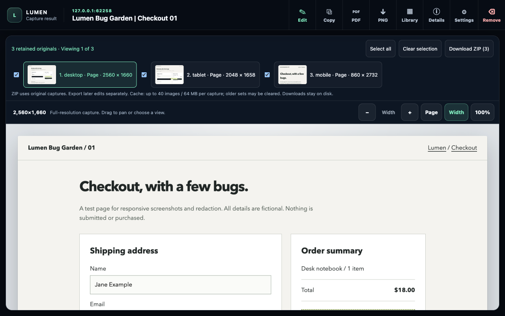
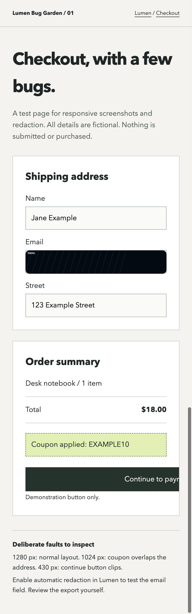

{kind=link}
{kind=link}
{kind=link}
01 / CAPTUREPage or selection
Select a page or region.
Capture a full page, the visible area, or a rectangle or lasso selection. Generate desktop, tablet, and mobile views in one run.
Selection illustration
For design review and web QA
Take screenshots of a page or a selected region at multiple widths. Mark the issue, cover private details, and save the images with useful page context for your next review.
Chrome beta. Manual install. No account required.

View full sizeBug Garden / Checkout 01
This checkout has deliberate layout faults. At tablet width the coupon overlaps the address. On mobile the continue button clips.
Live test page, scaled to fit. These are seeded defects, not Lumen detections. Open it in Chrome to try your first responsive set.
Open the test page ↗3 images. 3 email redactions across the set. 1 local library entry. Desktop uses the current window; this run used 1280 CSS pixels.
FROM PAGE TO HANDOFF
01Choose the area02Review & annotate03Copy or exportHow it works
Each capture opens ready to review. Zoom in, mark the issue, cover anything private, then choose how to save it.
Capture a full page, the visible area, or a rectangle or lasso selection. Generate desktop, tablet, and mobile views in one run.
Selection illustration
Review detected details and add your own redactions. Draw an arrow or leave a note to make the issue clear.

Copy an image or export PNG or PDF. Browse retained page parts and crops, then download selected originals together as a ZIP. Save annotated images separately; the ZIP contains originals.
Current redaction covers detectable visible text and filled inputs during export. Review every capture before external sharing, including text inside images and embedded frames.
Alongside the image
Hide sticky overlays and scroll to trigger lazy content before capture. Restore the page afterward.
Export colors, fonts, headings, and navigation labels as JSON. Keep the source context alongside the screenshot.
Extracted during this Bug Garden run. Read the source JSON.
Add arrows, text, and rectangles. Move or resize marks, undo edits, and export the reviewed image.
Return to captures, inspect saved files, and compare two images. Remove local copies when finished.
Privacy
Take screenshots and edit them in Chrome without signing in. Automatic redaction is optional and starts off. Choose it when you need it, then check the result before sharing. Connected exports require your setup and action.
How your data is handledLocal capture and editing are available now. Browser protected pages cannot be captured. Complex embeds, moving content, and unusual scrolling layouts may need a second pass.
Actual extension exports: desktop PNG, tablet PNG, mobile PNG. The run record includes extracted context and the saved library identifier.
Set up the beta
For now, install it from GitHub on your computer. The Chrome Web Store version is still in progress.
Download source ZIPExtract the ZIP. Keep the folder somewhere you can leave it.
Open chrome://extensions, enable Developer mode,
and choose Load unpacked. Select the extracted folder that
contains manifest.json.
Open a regular webpage, click Lumen, and review the result.
Replace your local source files with the latest version, then click
Reload on Lumen's card at chrome://extensions. Reload
your test webpage too. Keeping the same extension folder preserves
its local identity.